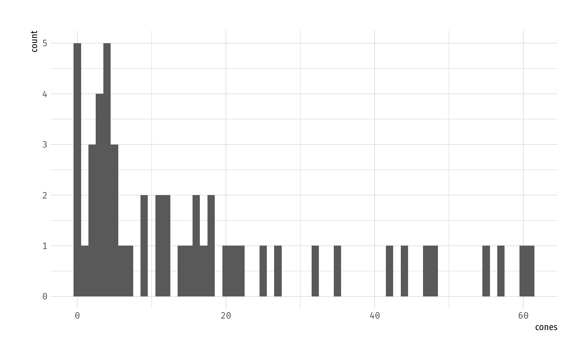

Kapitel 4 Weitere Modelle
4.1 Diagnostische Modelle
4.1.1 Heterogenous Negative Binomial (NBH)
- Selling feature: Erlaubt Parametrisierung von \(\alpha\)
- -> Ursache für under-/overdispersion modellierbar
Hilbe (2014) (p. 156)
data(nuts, package = "COUNT")
nuts <- subset(nuts, dbh < 0.6)
ggplot(data = nuts, aes(x = cones)) +
geom_histogram(binwidth = 1)
# Poisson-Modell als Startpunkt
m_pois <- glm(cones ~ sntrees + sheight + scover, family = poisson(), data = nuts)
dispersion(m_pois) # -> overdispersion #> X-squared(47) = 643.01
#> Pearson Dispersion = 13.681# NB-Modell
m_nb <- msme::nbinomial(cones ~ sntrees + sheight + scover, data = nuts)
summary(m_nb) # Dispersion < 1 -> NB-underdispersed#>
#> Call:
#> ml_glm2(formula1 = formula1, formula2 = formula2, data = data,
#> family = family, mean.link = mean.link, scale.link = scale.link,
#> offset = offset, start = start, verbose = verbose)
#>
#> Deviance Residuals:
#> Min. 1st Qu. Median Mean 3rd Qu. Max.
#> -2.4506 -1.0501 -0.4199 -0.3294 0.3910 1.6464
#>
#> Pearson Residuals:
#> Min. 1st Qu. Median Mean 3rd Qu. Max.
#> -1.0061432 -0.7292929 -0.3653465 0.0003247 0.4433920 2.6100790
#>
#> Coefficients (all in linear predictor):
#> Estimate SE Z p LCL UCL
#> (Intercept) 2.627 0.142 18.53 1.24e-76 2.34948 2.905
#> sntrees 0.306 0.161 1.90 0.0573 -0.00945 0.621
#> sheight 0.158 0.159 0.99 0.322 -0.15463 0.470
#> scover 0.536 0.179 3.00 0.00274 0.18516 0.886
#> (Intercept)_s 0.927 0.199 4.65 3.37e-06 0.53584 1.318
#>
#> Null deviance: 77.26177 on 49 d.f.
#> Residual deviance: 59.07252 on 46 d.f.
#> Null Pearson: 58.54636 on 49 d.f.
#> Residual Pearson: 41.19523 on 46 d.f.
#> Dispersion: 0.8955486
#> AIC: 383.8132
#>
#> Number of optimizer iterations: 53# NB-H: Ursache der Dispersion?
m_nbh <- msme::nbinomial(cones ~ sntrees + sheight + scover,
formula2 = cones ~ sntrees + sheight + scover,
scale.link = "log_s",
family = "negBinomial",
data = nuts)
summary(m_nbh)#>
#> Call:
#> ml_glm2(formula1 = formula1, formula2 = formula2, data = data,
#> family = family, mean.link = mean.link, scale.link = scale.link,
#> offset = offset, start = start, verbose = verbose)
#>
#> Deviance Residuals:
#> Min. 1st Qu. Median Mean 3rd Qu. Max.
#> -2.7908 -0.9137 -0.3023 -0.3208 0.4419 1.5671
#>
#> Pearson Residuals:
#> Min. 1st Qu. Median Mean 3rd Qu. Max.
#> -1.14680 -0.70958 -0.23947 0.03088 0.31546 3.20165
#>
#> Coefficients (all in linear predictor):
#> Estimate SE Z p LCL UCL
#> (Intercept) 2.6147 0.144 18.159 1.1e-73 2.3325 2.897
#> sntrees 0.2731 0.110 2.478 0.0132 0.0571 0.489
#> sheight 0.0744 0.144 0.516 0.606 -0.2081 0.357
#> scover 0.5217 0.158 3.300 0.000967 0.2118 0.832
#> (Intercept)_s -0.1950 0.238 -0.821 0.412 -0.6608 0.271
#> sntrees_s -0.3834 0.323 -1.186 0.236 -1.0168 0.250
#> sheight_s 0.3312 0.321 1.033 0.302 -0.2973 0.960
#> scover_s 0.2723 0.417 0.652 0.514 -0.5459 1.091
#>
#> Null deviance: 85.07187 on 49 d.f.
#> Residual deviance: 59.49816 on 43 d.f.
#> Null Pearson: 45.30266 on 49 d.f.
#> Residual Pearson: 46.82167 on 43 d.f.
#> Dispersion: 1.088876
#> AIC: 385.7116
#>
#> Number of optimizer iterations: 54Signifikanz der Dispersionsprädiktoren (Suffix _s) kann nun verwendet werden, um Ursachen der overdispersion zu identifizieren – auch wenn in diesem Beispiel keiner der Koeffizienten signifikant wird.
4.1.2 Negative binomial-P (NB-P)
Eine Erweiterung der NB1 und NB2, die den Exponenten im Varianzterm parametrisiert, womit die Dispersion nun nicht mehr statisch für alle Beobachtungen ist:
Damit ist NB-P äquivalent zu NB2 für \(\rho = 2\) bzw. NB1 für \(\rho = 1\).
Um zu evaluieren, ob ein NB1 oder NB2 Modell einen besseren Fit liefert, kann man nun ein NB-P Modell zum Vergleich fitten und Likelihood Ratio Tests zum Vergleich heranziehen.
Siehe auch Hilbe (2014) (p. 155) – wo der Autor zwar den obigen Ansatz beschreibt, aber zur Entscheidung zwischen NB1/2 zusätzlich auf die sowieso etablierten Informationskriteren (AIC/BIC) zurückgreift. Dazu gehört auch, dass das NB-P kein rein diagnostisches Werkzeug sein muss: Wenn ein NB-P ein deutlich kleineres AIC aufweist als NB1/2-Modelle, kann das NB-P auch als Modell der Wahl in Erwägung gezogen werden.
4.2 Zero-Inflated Models (mixture models)
- Logit/Probit Komponente für zeros
- Unterschied zu hurdle: Modelliert Nullen im Gegensatz zu Einsen
- Binary zeros und count zeros werden durch beide Komponenten modelliert
- -> Nicht getrennt interpretierbar wie bei hurdle models der Fall ist
- -> Erzeugen eigene PDF, e.g. ZIP, die mixture aus beiden Komponenten darstellt
ZIP und ZINB wurde hergeleitet als zweiteilige mixture distributions. Die allgemeine Form für mixture distributions ist
mit \(p\) als mixture proportion und \(g_1, g_2\) als Dichte-/Massefunktionen der beiden Komponenten.
In dieser Darstellung entspricht \(p\) der rate of zero-inflation \(\pi\), \(g_1\) einer degenerierten 0-Verteilung und \(g_2\) einer Poisson-PMF.
Definition 4.1 (Zero-Inflated Poisson Verteilung (ZIP)) Nach Perumean-Chaney u. a. (2013) (p. 1675)
\[\begin{align*} P(Y = 0) &= \pi + (1-\pi) \cdot e^{-\mu} \\ P(Y = y) &= (1 - \pi) \cdot \frac{\mu^y e^{-\mu}}{y!}, \quad y = 1, 2, 3, \ldots \end{align*}\]Definition 4.2 (Zero-Inflated Negative Binomialverteilung (ZINB)) Nach Perumean-Chaney u. a. (2013) (p. 1675)
\[\begin{align*} P(Y = 0) &= \pi + (1 - \pi) \cdot \frac{\theta^\theta}{(\theta + \mu)^\theta} \\ P(Y = y) &= (1 - \pi) \cdot \frac{\Gamma(\theta+y)}{\Gamma(\theta) \Gamma(y + 1)} \frac{\theta^\theta \mu^y}{(\theta + \mu)^{(\theta + y)}}, \quad y = 1, 2, 3, \ldots \end{align*}\]Die ZI-Modelle sind dabei geschachtelt mit ihren ursprünglichen Modellen, da sich letzteres für bestimmte \(\pi\) (auch wenn nicht \(\pi = 0\)) aus dem ZI-Modell ergeben.
Dieser Umstand ist Teil der Kritik an der Verwendung des Vuong-Test (entworfen für den Vergleich von ungeschachtelten Modellen) von Wilson (2015), der sich gegen die Verwendung des Tests ausspricht um die Modellanpassung von Modellen mit ihren ZI-Gegenstücken zu vergleichen (siehe z.B. Perumean-Chaney u. a. (2013) für eine solche Anwendung des Vuong-Tests).
Literatur
Hilbe, Joseph M. 2014. Modeling Count Data. Cambridge: Cambridge University Press. https://doi.org/10.1017/CBO9781139236065.
Perumean-Chaney, Suzanne E., Charity Morgan, David McDowall, und Inmaculada Aban. 2013. „Zero-Inflated and Overdispersed: What’s One to Do?“ Journal of Statistical Computation and Simulation 83 (9): 1671–83. https://doi.org/10.1080/00949655.2012.668550.
Wilson, Paul. 2015. „The Misuse of the Vuong Test for Non-Nested Models to Test for Zero-Inflation“. Economics Letters 127 (Februar): 51–53. https://doi.org/10.1016/j.econlet.2014.12.029.